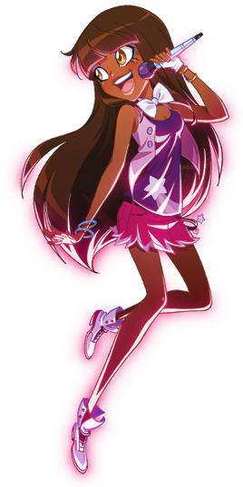
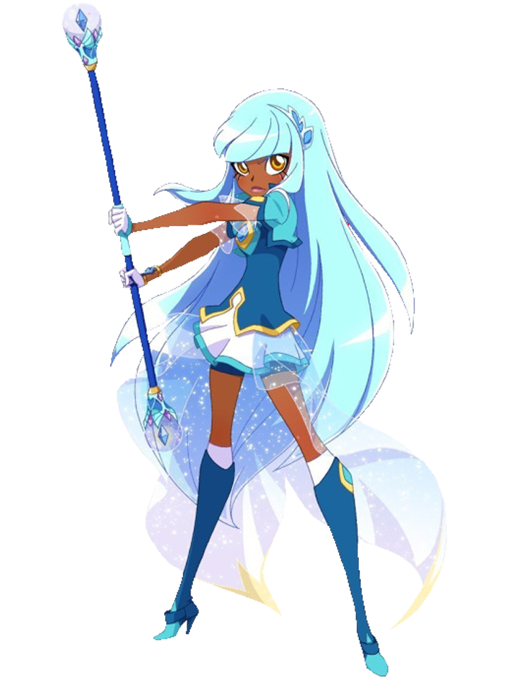
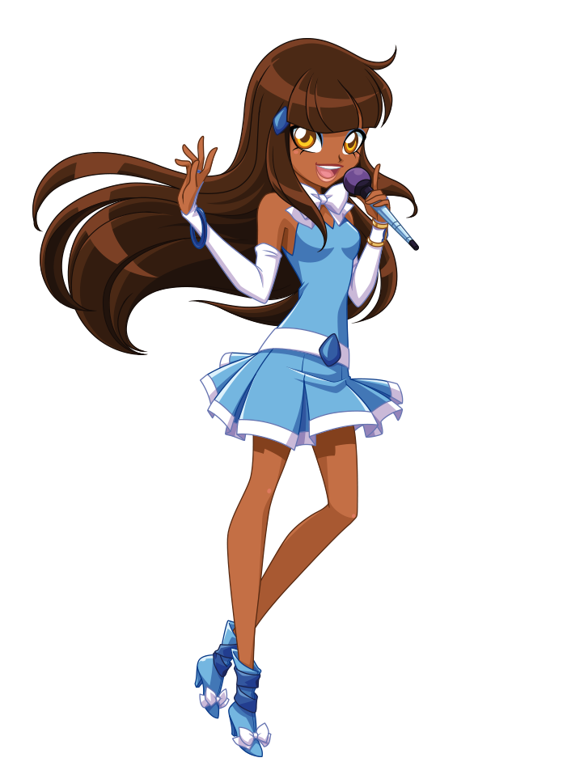
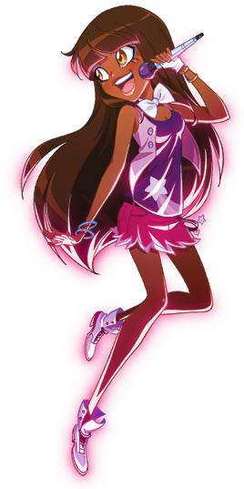
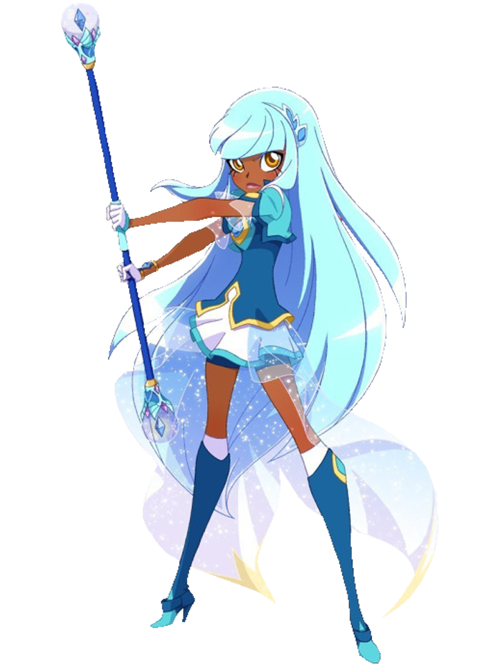
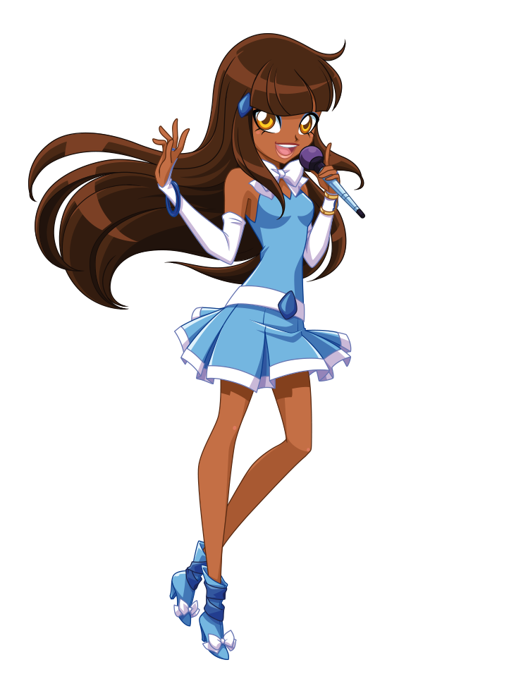

|
Talia
Talia, è una sedicenne molto seria e intelligente, in grado di imparare incantesimi complessi.
E 'la migliore amica di Talia e Auriana.
e tra le ragazze la più esperta di magia.
È la principessa di Xeris ed è innamorata di Kyle.
E' inoltre un membro della band LoliRock e sa suonare sia il keytar che la chitarra.
È la più intelligente del gruppo.
Insegna ai suoi amici nuovi incantesimi da preparare in battaglia.
Ha una sorella maggiore di nome Izira, ritenuta molto potente e che le fa da modello di vita.
Ha gli occhi marroni chiari, quasi arancioni, e i capelli castani che, quando si trasforma, diventano azzurri.
Il suo talismano di trasformazione è un bracciale con una pietra a forma di rombo blu incastonata al centro.
Possiede lo scettro di Xeris.
Ha i capelli castani lunghi fino in vita con frangia dritta, pelle scura
e occhi ambrati.
|
| Regno | Xeris |
| Amici | Iris, Auriana, Lyna, Carissa, Doug, Nathaniel, Kyle |
| Nemici | Gramorr, Mephisto, Praxina |
| Passioni | Perfezionare incantesimi, Sconfiggere i nemici |
| Odia | Perdere controllo della situazione |
| Poteri | Cristallo magico |
| Arma | Scettro di Xeris |
| Oggetto | Bracciale |
|
 




